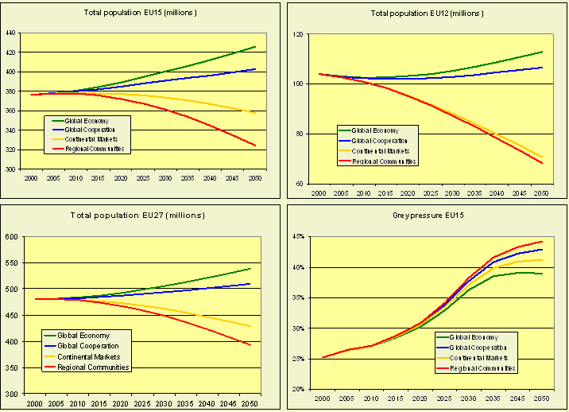

The extent of the human population is an important driving force. Future growth or decline and changes in the nature of a regions population influence rural areas in different ways. The number of people firstly determines the demand for food and therefore agricultural production and trade. Secondly the amount of labour available and the amount of space needed for urban land-use like housing, recreation and infrastructure are dependent on demographic features. Furthermore population size and nature strongly interact with another driver: the economic growth (income). Depending on the scenario, in the period 2000-2030 Europe's (EU27) population
will grow slightly, as in Global Economy and in Global Cooperation,or
decrease as in Continental Markets and Regional Communities.
In all scenarios the average age of the population will rise sharply. |

Population size and structure are determined by three fundamental demographic processes namely fertility, mortality and migration. For each of these three variables scenario specific assumptions have been made (Table 1). For the EU it is assumed that the fertility rate is more or less linked with economic growth. Life expectancy in Western European countries is considered to be high and slowly rising in all scenarios. The speed of convergence in other EU-countries to this level of life expectancy also depends on the economic growth rate in these countries. The same applies to the migration rate.
Table 1 - scenario assumptions regarding demography| Global Economy | Continental Market | Global Cooperation | Regional Communities | |
| Fertility | Converging High | Diversity Low | Converging High | Diversity Medium |
| Life expectancy | Converging Medium High | Diversity Low | Converging High | Diversity Medium |
| Migration | Converging High | Diversity Low | Converging Medium High | Diversity Low |